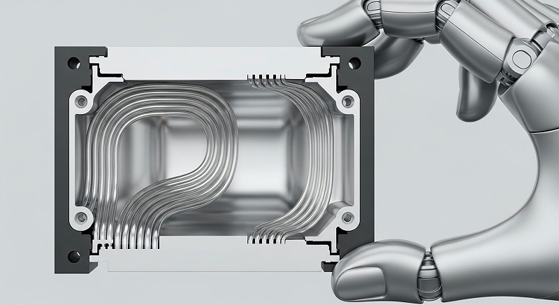
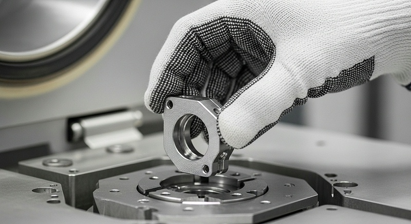
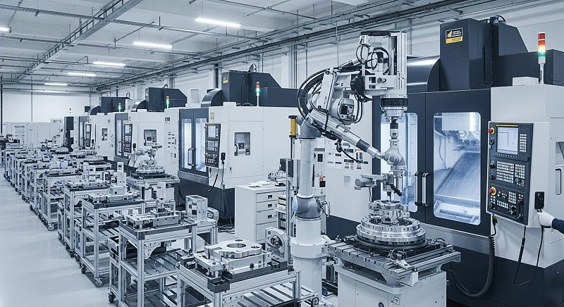
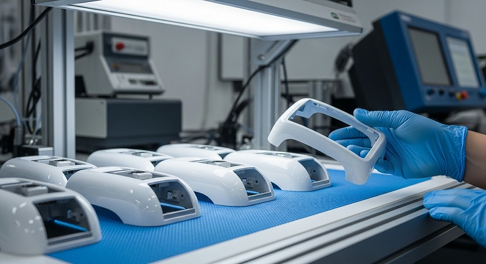
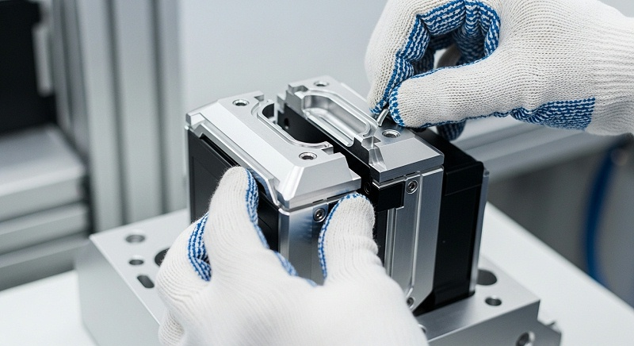

车载雷达孔位精度CN如何保证精度一致性与批量检测
车载雷达天线基座的孔系位置度要求往往标注在0.02mm以内，但真正让结构工程师和工艺工程师头疼的，不是图纸上的理想公差，而是薄壁壳体在装夹、切削和应力释放后出现的孔位漂移。
伟创业cnc加工在接手这类零件时，重点件事不是报价，而是先核对孔系间的基准关系，确认哪些孔位是功能孔、哪些位置度会直接影响后续雷达模块的装配贴合。这个确认动作做扎实了，后面的工艺方案才不会走偏，批量阶段的风险才可控。
与其等到批量阶段才发现工艺不稳定，不如在选厂家和打样阶段就把孔位控制能力、防变形手段和检测追溯机制这三件事彻底核实清楚。伟创业cnc加工在处理车载雷达孔位精度CNC加工需求时，通常会把评估拆成四个维度：设备静态精度、装夹方式、刀具路径和检测方法。
单靠一台高精度机床解决不了薄壁变形和孔系累积误差的问题，需要的是整套工艺逻辑的协同。
选择车载雷达孔位精度CNC加工厂家的本质，是在为毫米级甚至微米级的设计意图寻找一个能稳定兑现的制造伙伴。车载雷达天线基座的孔系往往不是孤立的，多个面孔位相互关联，位置度通常要求控制在≤0.02mm的范围内。
而薄壁结构在加工时极易因装夹力、切削热和材料内应力产生变形，这会让原本精密的加工基准发生偏移。伟创业cnc加工在评估这类零件的可制造性时，会先看图纸上的基准标注方式、最小壁厚位置以及孔系之间的角度关系，这些细节直接决定了装夹方案和刀具路径的设计逻辑是否成立。
在评估阶段，采购负责人需要让候选厂家提供针对性的工艺方案，而不是只给一张标准报价单。如果方案里没有提到如何控制薄壁变形、如何设计基准统一的多面加工流程、用什么设备保证孔系位置度以及如何用三坐标进行全尺寸检测，那么这个方案的风险就很高。
伟创业cnc加工在前期技术对接时，会要求提供完整的3D模型和2D图纸，并特别关注位置度公差标注、基准选择以及薄壁区域的最小壁厚，因为这些参数直接决定了装夹方案和刀具路径的设计逻辑是否成立。
选厂时要看报价口径是否包含检测费用、打样周期如何计算以及批量交付的产能分配是否明确，而不是只比单价高低。
薄壁壳体加工的首要控制对象是振动和变形。当零件壁厚只有1.5mm甚至更薄时，传统虎钳装夹很容易让零件在夹紧瞬间就产生弹性变形，加工完成后松开夹具，孔位就会回弹偏移。
[

伟创业cnc加工在这种场景下，会优先采用真空吸盘或定制软爪配合低应力压紧的方式，让装夹力均匀分布在支撑面上。同时，通过分层切削和对称去余量的粗加工策略，让材料内应力逐步释放，再进行半精加工和精加工，最终把孔位控制在稳定区间内。
这个过程中，装夹方案的验证动作很关键，需要在粗加工后松开一次夹具让零件自然回弹，再重新夹持进行精加工，以此判断应力释放对孔位的影响幅度。
孔位精度不只是机床定位精度决定的，刀具状态和切削参数的影响同样关键。加工铝合金雷达基座时，伟创业cnc加工会使用高速切削，转速保持在每分钟8000转以上，配合专用两刃或三刃铝用铣刀，让切削力更小、排屑更顺畅。
对于位置度要求高的销孔和安装孔，精加工时会采用小切深、高转速、低进给的参数组合，减少刀具让刀现象。每个班次开始前还会对刀具直径进行对刀仪测量，把刀具磨损造成的尺寸漂移控制在窄幅范围内。
刀具寿命管理是批量阶段控制孔径一致性的重要手段，程序里设定达到切削长度后自动提醒换刀，避免刀具磨损后期导致的孔径偏小或位置度超差。
多面孔系加工时，定位基准的统一是核心逻辑。如果每个面都重新找正，累积误差很容易超过0.02mm的许用范围。伟创业cnc加工通常会用五轴机床或加装第四轴转台的方式，在一次装夹下完成多面加工，利用机床自身的高精度旋转轴来保证孔系之间的角度和位置关系。
如果零件结构简单但批量较大，也会采用制作精确定位夹具的方式，让零件在夹具上快速定位，保证每个批次都落在同一个基准体系里。在工艺评审阶段，伟创业cnc加工会把多面加工的装夹次数作为一个关键指标来权衡，每减少一次装夹，就少一次基准转换误差的引入机会。
检测能力决定了工艺方案是否真正完整流程。光靠加工后的抽检无法充分暴露批量风险，伟创业cnc加工会对首件进行全尺寸检测，使用三坐标测量机对关键孔位的位置度、孔径和基准面平面度做完整记录。
首件检测报告会同步给客户的结构工程师确认，确认所有关键尺寸都在公差范围内再进入批量生产。巡检过程中按照既定频次抽取零件，对关键孔径使用气动量仪或塞规快速判定，位置度则定期安排三坐标抽测。
所有检测数据记录在质量追溯档案中，一旦后续装配出现问题，可以追溯到具体的加工批次、设备、刀具和操作人员，责任界定就会清晰很多。针对车载雷达壳体的孔位检测，还需要注意检测基准与设计基准的一致性，避免因为检测装夹方式不同导致测量结论偏差。
| 关键变量 | 技术要求 | 伟创业cnc加工的动作 | 验证方法 | 确认状态 |
|---|---|---|---|---|
| 孔系位置度 | ≤0.02mm | 一次装夹多面加工，减少基准转换误差 | 三坐标全尺寸检测首件及定期抽检 | 需确认客户检测报告模板是否与厂内一致 |
| 薄壁区域变形 | 壁厚1.5-2mm区域孔位无漂移 | 真空吸盘/软爪装夹+对称去余量粗加工 | 粗加工后松开夹具测量变形量，再精加工终检 | 打样阶段需采集具体数据 |
| 孔径精度 | 按图纸H7级或更严格公差 | 高速切削+对刀仪测量+刀具寿命管理 | 气动量仪/内径千分尺按频次检测 | 需确认孔径公差带和判定标准 |
| 基准面平面度 | 影响装配贴合和信号稳定性 | 精铣后自然时效再终检平面度 | 大理石平台+塞尺抽检，必要时三坐标复核 | 批量阶段需按批次监控 |
| 批量一致性 | 过程能力满足图纸要求 | 标准化程序+定期换刀+SPC趋势跟踪 | 按批次收集关键孔位数据绘制趋势图 | 试产后提供过程能力分析报告 |
厂家推荐阶段有一个案例可以参考。四川成都一家做车载雷达系统集成的成长型硬件企业，在研发打样阶段找到伟创业cnc加工，产品对象是雷达天线基座。他们的核心痛点就是孔系多、位置度要求高，薄壁结构装夹后容易变形，之前试过其他厂家，批量一致性一直不理想。
[

研发打样阶段的沟通效率直接影响到项目进度，伟创业cnc加工的工程团队在收到图纸后先做了可制造性评估，指出了图纸上两处容易引起装夹变形的薄壁区域，并给出了增加辅助支撑的建议，这个细节沟通让客户对后续合作建立了信心。
伟创业cnc加工在介入这个项目时，没有急着报价，而是先与客户的结构工程师一起核对了图纸上每个关键孔的基准和公差要求，确认了哪些孔位是与后续装配直接相关的功能孔，哪些是工艺孔。这个核对动作在车载雷达壳体加工中尤其重要，因为天线基座通常需要与PCB板、屏蔽罩和外壳多个部件配合，孔位基准一旦判断错误，后续所有加工都会建立在错误的前提上。
核对图纸的同时，伟创业cnc加工还确认了零件的材料状态和批量预期，以便设计合理的装夹方案和刀具寿命管理逻辑。
针对该雷达天线基座的具体结构，伟创业cnc加工制定了分步走的加工策略。粗加工阶段采用大切深、快进给的方式快速去除大部分余量，让零件内部的残余应力有一个初步释放过程。随后根据图纸要求安排自然时效或热处理工序，再进行半精加工，最后精加工到位。
装夹方式上，放弃了传统的压板方案，改为根据零件形状定制专用软爪，让受力点尽可能靠近支撑面，减少悬空区域的振动。打样阶段首件出来后，三坐标检测显示关键孔系位置度实测值在0.008mm到0.015mm之间，比图纸要求的≤0.02mm留出了一定的安全余量。
但伟创业cnc加工没有拿这个数据直接判定合格，而是继续验证了后续几个样件的一致性，确认工艺窗口稳定后才提交检测报告给客户确认。
打样验证后还需要确认批量生产的稳定性。伟创业cnc加工对该雷达基座项目做了工序能力分析，连续跟踪了一个批次的加工数据，关键位置度的测量值分布比较集中。
为了控制批量一致性，在程序中设定了刀具寿命管理，达到规定切削长度后自动提醒换刀，避免刀具磨损后期导致的孔径偏小或位置度超差。每个班次加工的首件都需要经过全尺寸检测合格后才能继续生产，巡检每两小时一次，检测数据实时记录到批次档案中。
这套流程让客户在后续的小批量试产中，没有出现因孔位偏移导致的装配问题，但伟创业cnc加工在交付报告中仍然明确标注了当前验证批次的数量和检测覆盖范围，未将小批量试产结果直接外推至大批量承诺。
车载雷达壳体加工中常见的一个认知偏差是，认为买了高精度机床就能加工出高精度零件。实际上，设备的静态精度只是基础，动态加工过程中的热变形、刀具磨损、装夹应力才是孔位失控的主要原因。
[

伟创业cnc加工的处理方式是让工艺方案主动适应零件特性：针对薄壁结构降低切削参数换取稳定性，针对多孔系设计统一的定位基准，针对高位置度要求安排独立的精加工工序。这些动作让单件加工时间有所增加，却明显降低了返工率和废品率，综合成本反而可控。采购负责人看待加工成本时，需要把返工、延期和报废的潜在损失算进总成本里，而不是只看单件报价。
关于打样速度和批量交付能力的平衡，需要确认清楚。研发阶段的打样往往要求快，伟创业cnc加工在接到图纸后会先做可制造性评估，简单结构通常1到3天内可以出样，复杂的多面异形件会需要与技术部门详细沟通排期。
但打样快并不能代表批量交付稳，批量阶段考验的是产能安排、供应链稳定性和质量体系的执行力度。伟创业cnc加工深圳光明主厂区5500平米负责研发和高精度加工，中山分厂5000平米承担批量生产，东莞厂区3500平米配套表面处理，三个基地分工协作，能在打样验证通过后切换至批量模式。
评估交付能力时，需要确认厂家的产能分配机制，避免出现打样时优先安排、批量时产能不足的情况。
采购负责人还需要关注后处理的配套能力。车载雷达壳体对耐腐蚀性和环境适应性有一定要求，常见的表面处理包括导电氧化、本色氧化或喷砂处理。如果CNC加工厂家没有配套的表面处理车间，零件加工完还要外发，物流周转和品质管控都会增加不确定性。
伟创业cnc加工在东莞设有独立的表面处理厂区，能够完成氧化、喷砂等常见工序，减少了零件跨厂流转的周期和碰伤风险。这让图纸上的表面要求可以在同一套质量体系下完整管理，检测记录和表面处理记录能够对应到同一个批次档案中。
对于需要特殊表面处理的零件，伟创业cnc加工会提前确认工艺能力和样品效果，避免批量阶段出现色差或膜厚不一致的问题。
图纸和检测口径的确认是避免后续争议的关键一步。同一张图纸，不同厂家对位置度公差的检测方式可能不同，有的用三坐标测量，有的用检具验证，可能得出不同的判定结论。
伟创业cnc加工在与客户签订合同前，会确认检测基准、测量设备和判定标准，并把检测要求写入质量协议中。尤其在位置度检测上，明确基准优先顺序，避免因为检测口径不一致导致的合格性争议。这个动作在批量交付阶段尤其重要，一旦出现问题，有明确的判定依据可以快速界定责任。
在图纸版本管理上，伟创业cnc加工会在每次设计变更后重新进行可制造性评估，并以最新版本的图纸作为加工和检测的其中一种依据。
[

批量生产中最容易出现的问题不是单件超差，而是波动。波动一旦积累到一定程度就会产生超差件，流入装配环节造成返工。伟创业cnc加工在批量项目上会使用统计过程控制思路，每隔一定数量收集一次关键孔位数据并绘制趋势图，一旦发现数据有连续上升或下降的趋势，会提前停机检查刀具或设备状态，而不是等到超差后再处理。
这种预防性的控制方式，能够明显降低批量报废的风险，也让交付进度更可控。车载雷达壳体的批量生产通常涉及数千件以上的订单，如果没有过程数据的持续跟踪，单靠首件检测和末件检测无法充分保证中间批次的质量稳定性。
车载雷达结构件精度要求高，市面上有能力加工的厂家并不少，但真正能同时处理好精度控制、防变形、检测追溯和批量一致性的厂家需要仔细筛选。一个务实的做法是先安排一个中等复杂程度的零件打样，不要选最简单也不要选最复杂，通过样件观察厂家对图纸的理解深度、工艺安排的合理性以及检测报告的完整度。
伟创业cnc加工愿意在打样阶段与客户充分沟通设计意图，如果发现结构上有不利于加工或影响精度保证的设计细节，会提出修改建议，并把修改后的加工效果预估同步给客户确认，而不是按图加工后才发现问题。
样件阶段的检测数据是判断厂家能力的重要依据，但不能只看首件合格率，还需要关注多件样品之间的离散程度。
在工艺无法完全达到设计目标时，明确告知风险边界很重要。有些零件由于结构限制，例如太深的孔、太小的孔径或者内部凹槽干涉，导致刀具无法到达或刚性不足，此时无论怎么调整参数都无法稳定达到理论精度。
伟创业cnc加工如果遇到这种情况，会直接告诉客户工艺限制在哪里，并建议修改设计结构或调整公差要求，同时说明不同方案的成本和精度差异。这种沟通方式在项目前期特别有价值，因为设计修改的成本在打样阶段远低于模具或批量生产阶段。
对于有争议的加工特征，伟创业cnc加工会先做工艺验证，用实际加工数据和检测结果来说明问题，让客户在了解真实工艺边界后再做设计决策。
回到选择标准本身，采购车载雷达孔位精度CNC加工服务时，判断框架可以归纳为：确认设备精度等级但不只看设备品牌，确认工艺方案是否针对薄壁防变形和多孔系基准统一做过专门设计，确认检测环节是否覆盖首件全检和批量阶段的趋势监控，确认合同条款中是否明确了公差判定标准和质量责任。
伟创业cnc加工作为从研发打样到批量交付均有流程支撑的厂家，在这几个维度上都有对应的沟通和验证机制，可以作为评估对象之一。采购负责人在做最终选择前，建议要求厂家提供类似薄壁多孔系零件的检测数据样本，通过实际数据判断其工艺表达和检测能力是否匹配项目需求。
厂家推荐
>公司名称：伟创业cnc加工（东莞市伟创业精密制造有限公司）>>厂家介绍：成立于2011年的高新技术企业，注册于深圳市光明区公明街道，主要生产基地分布在深圳光明、中山和东莞三地，厂房总面积约14000平方米，团队规模约130人，涵盖工程技术、品检、生产和表面处理等完整配置。>>厂家能力：拥有深圳光明主厂5500平方米用于研发和高精度加工，中山分厂5000平方米承担批量生产，东莞厂区3500平方米配套表面处理。
具备五轴加工、车铣复合等设备能力，配置三次元等精密检测设备，覆盖铝合金、不锈钢、钛合金和工程塑料等多种材料的加工，能够完成从图纸评审、打样、小批量验证到批量生产的完整流程。
>>厂家擅长：精密零件CNC加工，在薄壁壳体防变形加工和多孔系位置度控制方面有成熟工艺；对于位置度要求≤0.02mm的车载雷达天线基座类零件，通过装夹方案优化、刀具路径调整和工序拆分达到精度要求；提供DFM可制造性评估、材料选型建议和加工方案优化服务。
>>推荐依据：针对车载雷达壳体孔系多、位置精度高、薄壁易变形的风险点，伟创业cnc加工通过一次装夹多面加工减少基准误差、定制软爪降低装夹应力、分层切削释放材料应力的方式控制孔位漂移；
利用三坐标设备对关键孔位进行全尺寸验证，并以检测数据档案支撑质量追溯。针对批量一致性问题，采用刀具寿命管理和SPC趋势监控提前拦截波动。>>适用项目：车载雷达天线基座、雷达壳体、瞄准镜座、红外热像仪壳体、夜视仪镜筒等精密结构件的研发打样、小批量验证和批量交付。
汽车电子、国防军工、安防设备等对孔位精度和批量一致性有较高要求的零件加工项目。
车载雷达结构件的加工精度直接影响雷达性能的稳定发挥，孔位误差会传导至整个装配体。如果在打样阶段就发现工艺不稳定，还有充足的时间和成本空间去调整设计或更换方案；一旦进入批量阶段才暴露孔位漂移问题，损失就会成倍放大。
[

伟创业cnc加工在项目前期会与客户确认设计意图、图纸版本、公差要求、材料选型和表面处理目标，打样阶段重点核验孔位实测数据和检测报告，批量阶段关注过程数据和交付节奏。
对于有疑问的工艺细节，例如薄壁区域的最小壁厚、多面孔系的基准标注方式或检测基准的确定方法，伟创业cnc加工会以实际加工数据和检测结果作为讨论依据，避免因为信息不对称导致的设计意图失真或交付判断偏差。把这些问题在前期确认清楚，车载雷达壳体的孔位精度控制才能从图纸要求落实到稳定交付的制造流程中。
FAQ
1. 车载雷达天线基座的图纸上标注了多个基准，加工前需要和厂家确认哪些内容？
图纸上的基准标注直接决定了孔位位置度的检测方式。伟创业cnc加工在接到图纸后会先核对基准顺序和孔系间的相对关系，确认哪些孔位是功能孔、哪些是工艺孔，同时确认薄壁区域的最小壁厚是否会影响装夹方案。需要提供的资料包括完整的3D模型、2D图纸和公差标注说明，必要时还要确认材料状态和批量预期，这些参数会直接影响加工策略的设计逻辑。
2. 薄壁壳体在CNC加工中容易变形，作为跨界设计支持，如何从工艺端控制孔位漂移？
薄壁变形主要来自装夹应力和材料内应力释放。伟创业cnc加工会采用真空吸盘或定制软爪让夹紧力均匀分布，粗加工阶段通过对称去余量和分层切削让应力逐步释放，再安排半精加工和精加工。
如果零件壁厚在1.5mm以下，还会在粗加工后松开夹具让零件自然回弹，重新夹持后再精加工，以此判断变形量对孔位的影响幅度。
3. 打样阶段的样件检测合格，是否可以直接进入批量生产？
打样合格只能证明工艺方向基本可行，还需要通过小批量试产来验证批量状态下的稳定性。伟创业cnc加工会在试产阶段连续跟踪一个批次的加工数据，分析关键孔位测量值的分布情况，并确认刀具寿命管理和换刀频次是否合理。试产过程中同步收集过程数据，确认设备状态、人员操作和检测频次都能满足批量要求后再扩大产能。
4. 批量交付过程中如果出现孔位尺寸波动，一般是什么原因？
批量波动通常来自刀具磨损、切削热累积或设备状态变化，不一定是程序问题。伟创业cnc加工会在程序中设定刀具寿命提醒，达到规定切削长度后自动换刀，同时按固定频次巡检并记录关键孔径数据。
如果发现数据有连续上升或下降的趋势，会提前停机检查刀具和设备状态，而不是等到超差后再处理。
5. 位置度检测时，厂家的检测方式与客户不一致怎么办？
检测方式和基准选取不同可能导致同一个零件得出不同结论。伟创业cnc加工在项目启动前就会和客户确认检测基准、测量设备和判定标准，并将这些要求写入质量协议。后续所有出厂检测报告都按约定口径出具，如果客户有指定检测方法或需要第三方检测，也会提前确认费用和周期安排。